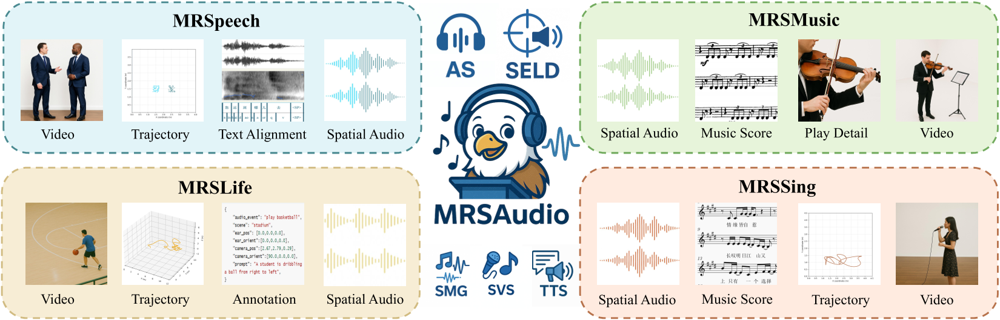
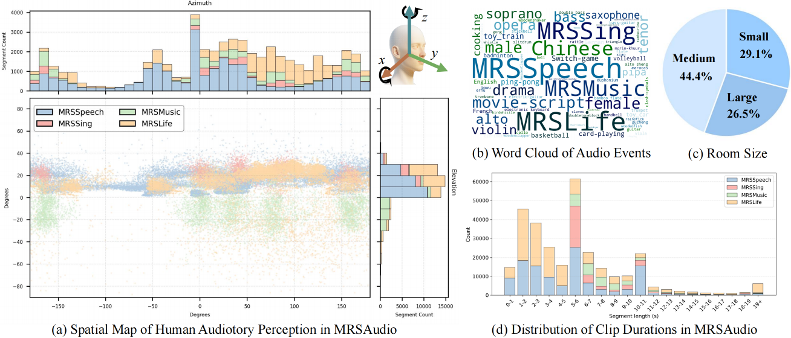

The dataset comprises four real-world scenarios: MRSSpeech, MRSLife, MRSMusic, and MRSSing, each with multimodal annotations for spatial audio research


Abstract
Humans rely on multisensory integration to perceive spatial environments, where auditory cues enable sound source localization in three-dimensional space. Despite the critical role of spatial audio in immersive technologies such as VR/AR, most existing multimodal datasets provide only monaural audio, which limits the devel5 opment of spatial audio generation and understanding. To address these challenges, we introduce MRSAudio, a large-scale multimodal spatial audio dataset designed to advance research in spatial audio understanding and generation. MRSAudio spans four distinct components: MRSLife, MRSSpeech, MRSMusic, and MRSSing, covering diverse real-world scenarios. The dataset includes synchronized binaural and ambisonic audio, exocentric and egocentric video, motion trajectories, and fine-grained annotations such as transcripts, phoneme boundaries, lyrics, scores, and prompts. To demonstrate the utility and versatility of MRSAudio, we establish five foundational tasks: audio spatialization, and spatial text to speech, spatial singing voice synthesis, spatial music generation and sound event localization and detection. Results show that MRSAudio enables high-quality spatial modeling and supports a broad range of spatial audio research.

Introduction
In this paper, we present MRSAudio, a 500-hour large-scale multimodal spatial audio dataset designed to support both spatial audio understanding and generation. It integrates high-fidelity spatial recordings with synchronized video, 3D pose tracking, and rich semantic annotations, enabling comprehensive modeling of real-world auditory scenes. As shown in Figure~\ref{fig:com}, the dataset comprises four subsets, each targeting distinct tasks and scenarios.
- MRSLife (150 h) captures daily activities such as board games, cooking, and office work, using egocentric video and FOA audio annotated with sound events and speech transcripts.
- MRSSpeech (200 h) includes binaural conversations from 50 speakers across diverse indoor environments, paired with video, 3D source positions, and complete scripts.
- MRSSing (75 h) features high-quality solo singing performances in Chinese, English, German, and French by 20 vocalists, each aligned with time-stamped lyrics and corresponding musical scores.
- MRSMusic (75 h) offers spatial recordings of 23 Traditional Chinese, Western and Electronic instruments, with symbolic score annotations that support learning-based methods for symbolic-to-audio generation and fine-grained localization.
Together, these four subsets support a broad spectrum of spatial audio research problems, including event detection, sound localization, and binaural or ambisonic audio generation. By pairing spatial audio with synchronized exocentric and egocentric video, geometric tracking, and detailed semantic labels, MRSAudio enables new research directions in multimodal spatial understanding and cross-modal generation.

Pipeline

The construction of MRSAudio is carried out in four steps: Planning, Recording, Annotation and Post-Processing.
Statistics
